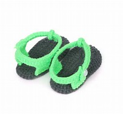
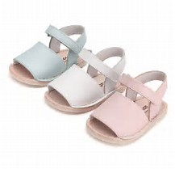
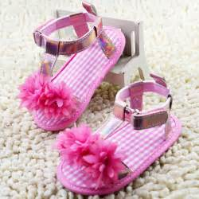
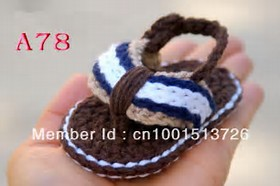
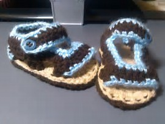
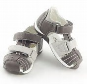

SANDALIAS PARA BEBE
- En esta seccion encontraran diferentes modelos de sandalias para su bebe,son muy comodos y muy utiles en temporada de calor.
 |
ID.158360 Corte.Tipo ante Tallas.10,11,12 color.Rosa,Blanco costo.$30 |
ID.158363 Hecho de Estambre Tallas.10,11 color.Cafe costo.$40 |
|
|  | ID.158365 Hecho de Estambre Tallas.10,11,12 color.negro,verde costo.$40 |
 | ID.158367 Corte.Tipo ante Tallas.10,11,12 color.Hueso,Blanco,Azul bajo costo.$30 |
|  | ID.158412 Corte.Liso Tallas.10,11,12 color.Rosa costo.$30 |
 | ID.158400 Hecho de Estambre Tallas.10,11 color.Cafe,Blanco,Azul costo.$50 |
|  | ID.158410 Hecho de Estambre Tallas.10,11,12 color.Cafe,Azul costo.$40 |
ID.158415 Hecho de Estambre Tallas.10,11,12 color.Rosa,Gris costo.$50 |
|
ID.158419 Hecho de Estambre Tallas.10,11 color.Blanco,rosa costo.$30 |
 | ID.158417 Corte.Tipo ante Tallas.10,11,12 color.Gris,Blanco costo.$60 |